AI 不會取代你，但更擅長用 AI 的人會取代你
社會焦點已由「會否使用 AI」轉向「能否善用 AI 創造價值」。
HKET 理財名人堂截圖，原用於 AI INFINITY HTML 開首。二十一世紀教育論壇 2026｜創新實踐案例分享
以「賽馬會成長機地．啟發潛能發明班」為起點，展示學生如何由 AI 使用者，走向有同理心的產品架構師。
外部脈絡：AI 正在改變社會，也正在改變學校
社會焦點已由「會否使用 AI」轉向「能否善用 AI 創造價值」。
HKET 理財名人堂截圖，原用於 AI INFINITY HTML 開首。
校本實踐已被外界看見：學生可以用真實產品展示學習成果。
香港01 教育報道截圖，原用於 AI INFINITY HTML 開首。我們不是講工具，而是讓學生做出看得見的發明


核心命題
教師由安排內容，轉為設計任務、情境、回饋和展示機會。
AI INFINITY 支援課堂、展覽、身份和數據。
學生面向真實對象，做出有用、有溫度的發明。
對應論壇議題：AI 時代的認知重塑
生成式 AI 進入校園，傳統電腦科不足以回應學生需要，學校將方向轉為 STEAM 與跨科 AI。
學生由真實問題出發，結合 Vibe Coding、AI 平台、感測器和圖像生成，完成可展示作品。
價值不在工具數量，而在學生學會觀察、提問、修正，教師亦轉為學習設計者。
資料來源：投稿文章《從成果展到學習身份：AI INFINITY 的校本創新實踐》。
由教學者走向創變者
教師不再只是解釋知識，而是把學生帶到真實問題、真實對象和真實回饋之前。
以前以課本、技巧、完成度為主要焦點。
現在以問題定義、用戶需要、原型測試和展示回饋為學習主線。
專業核心判斷科技是否公平、有用、有溫度，並把它轉化成可學習的任務。
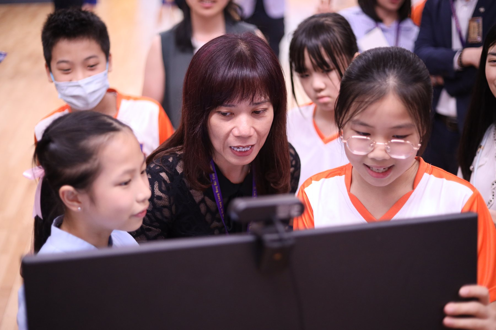
2026 年 4 月 23 日：全校參與的創科現場
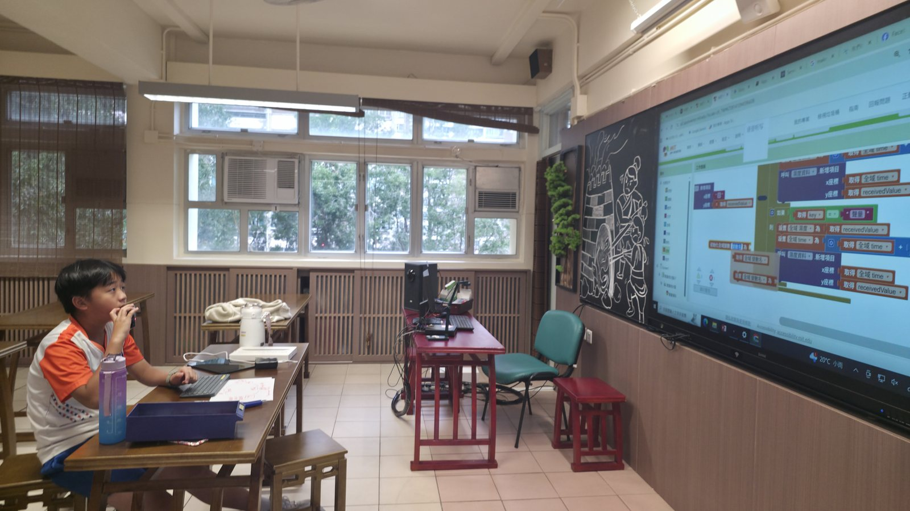
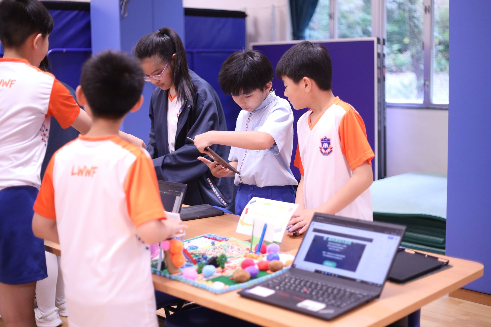
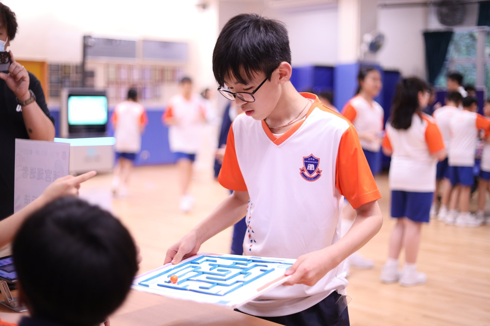
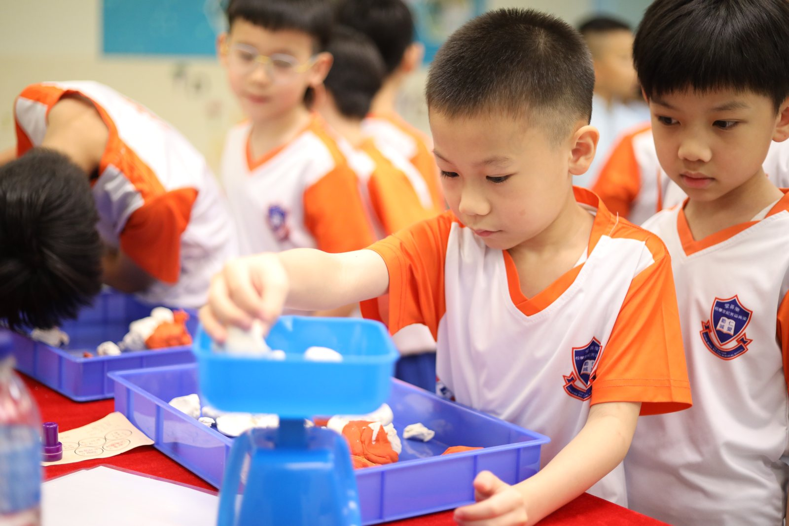
把成果展變成學習身份
公平參與每位學生掃描個人卡片投票，每人三票，避免重複投同一組。
即時回饋排行榜與後台數據即時更新，展示學生興趣和參與情況。
可延伸未來可連接閱讀、運動、藝術、默書、才藝匯演和獎勵兌換。

四大支柱，由活動走向課程


學生發明與成果展原型


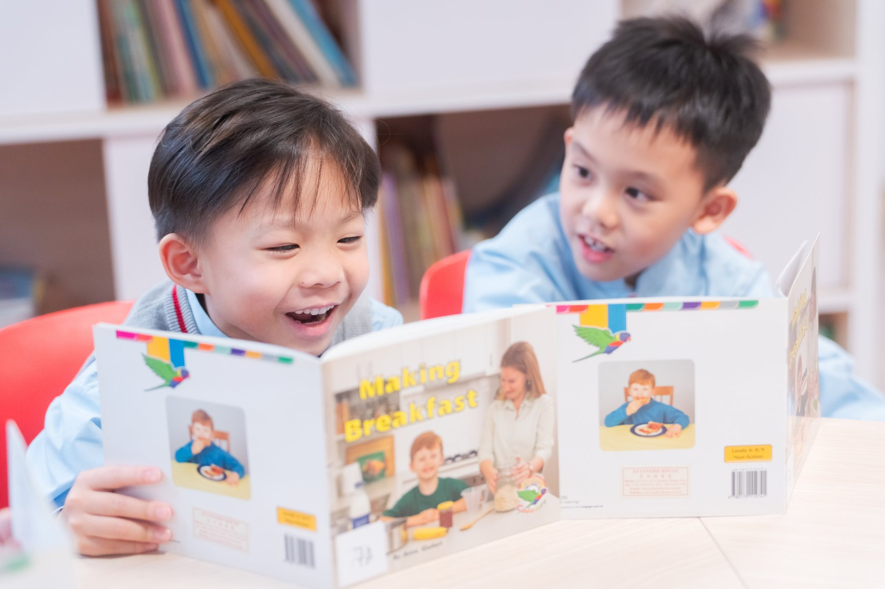
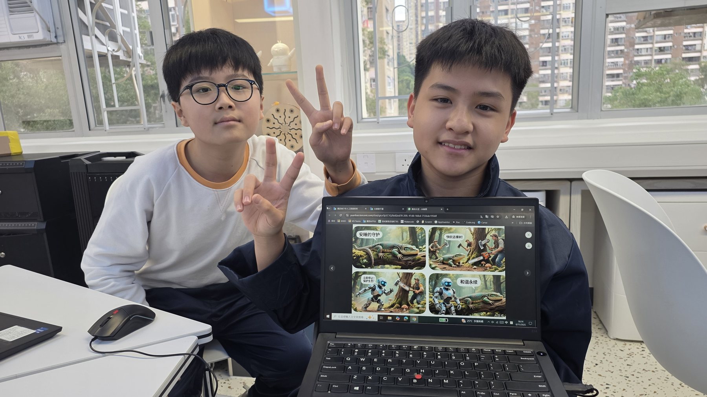
校本平台與跨科 AI 項目


AI 發展組 2025-26：四大關注


學生不再只是完成作品
從社區、課堂、校園生活找痛點。
聆聽長者、同學、家長和使用者。
畫流程、定功能、拆任務。
以 AI、感測器、App 和網頁做原型。
在成果展接受真實使用與提問。
根據投票、回饋和數據再設計。
冠軍：轉角守護者
問題學生聆聽輪椅使用者在街角盲區遇到的危險。
原型以超聲波感測與提示器模擬智能防撞提醒。
價值把同理心轉化為可被測試、可被展示的安全方案。


亞軍：AI 植物守護神

土壤濕度、溫度、光線等資料成為判斷依據。
把數據轉化成學生能理解的植物需要。
用互動介面提醒澆水、光照和保護植物。
季軍：AI 中華文化試身室
文化內容六大民族服飾、問候語與文化背景。
生成應用串接 Gemini 生成民族服飾虛擬試穿打卡照。
外部肯定曾於香港中文大學 Local Pitching Day 獲評審高度評價。

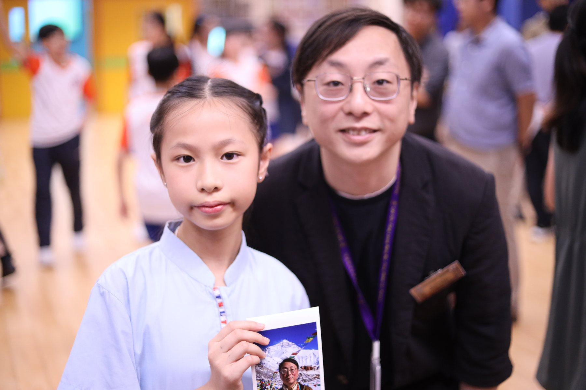
不同組別，不同需要


多科網站與 AI 學習平台


看見天賦，自選未來
家長看到的不是一個網站，而是一條由小一開始發現興趣、建立自信、選擇方向的成長路線。

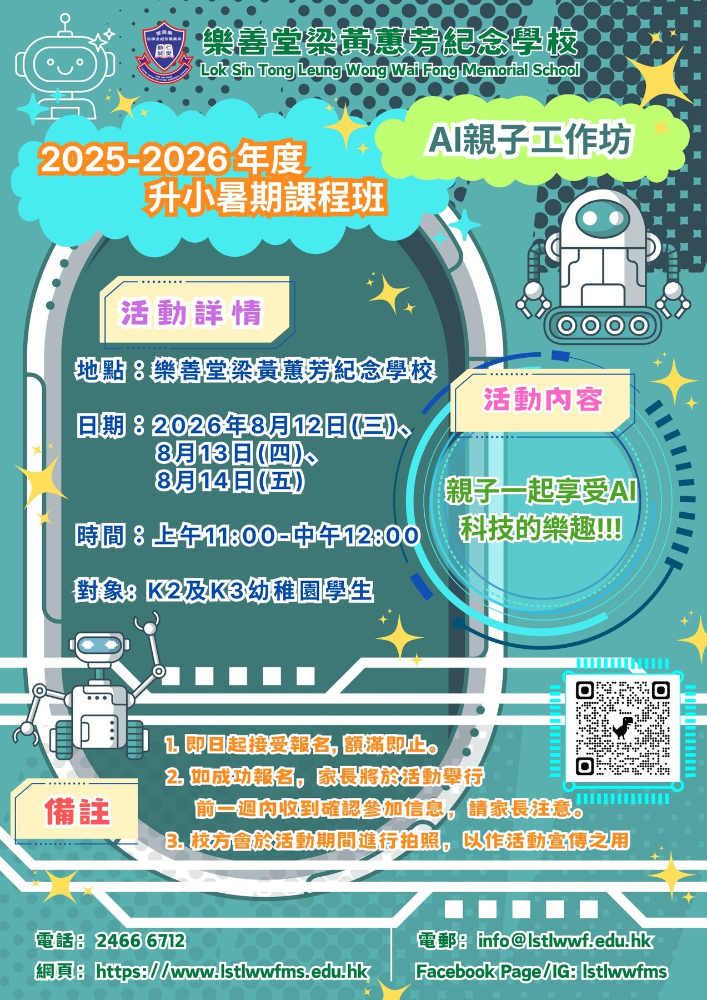
不是一次性成果展
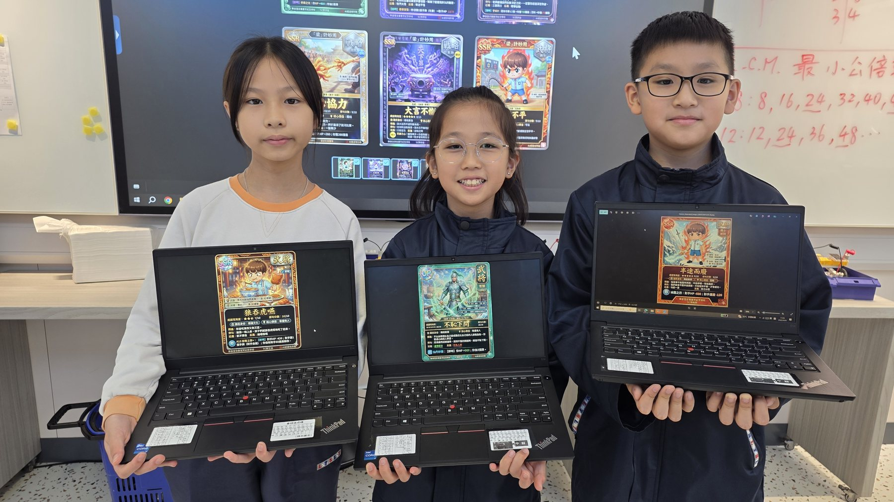
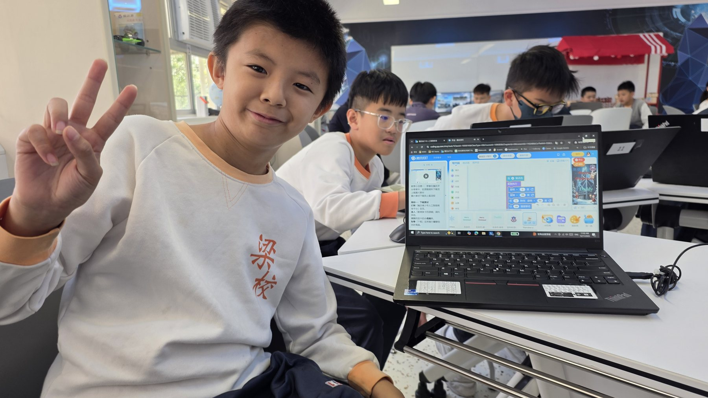
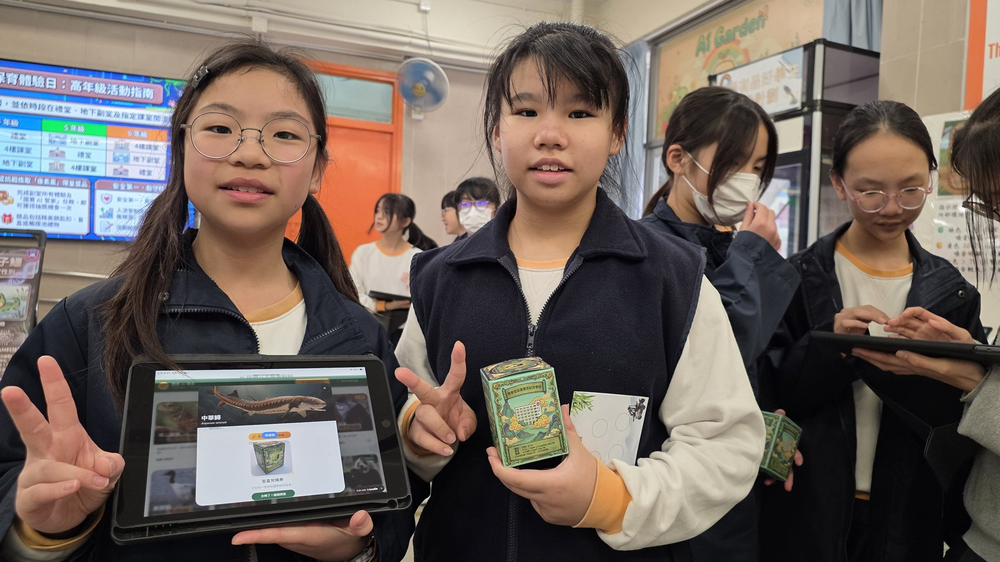
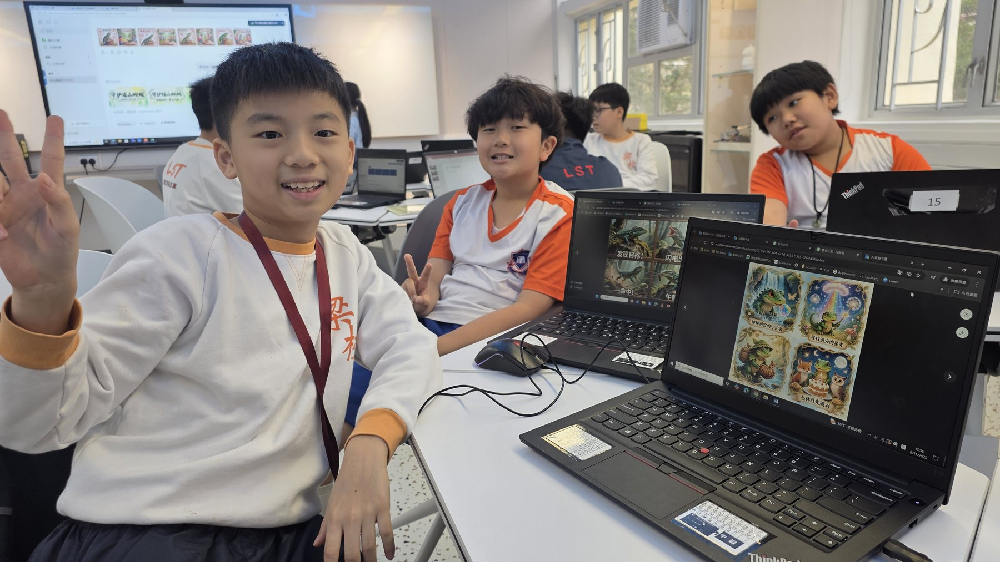
教師的專業，不是退後，而是更精準地介入
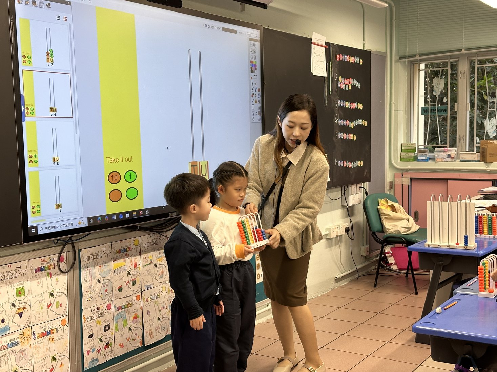
設計任務把課程目標轉成學生能完成、能展示的挑戰。
管理風險處理資料、影像、AI 產出、版權和倫理判斷。
建立回饋利用現場提問、投票數據和作品展示推動再設計。
由使用者變成產品架構師
把模糊感受變成清楚問題。
把構想拆成功能、資料和介面。
根據真實回饋改良作品。
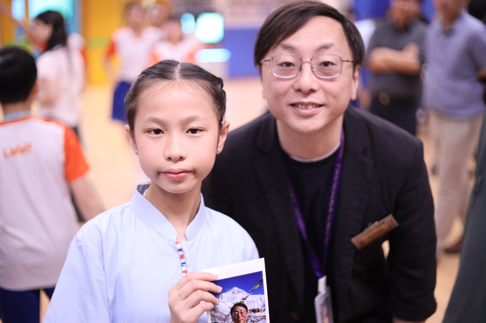
由校內展示走向公開舞台


由活動變成持續學習身份
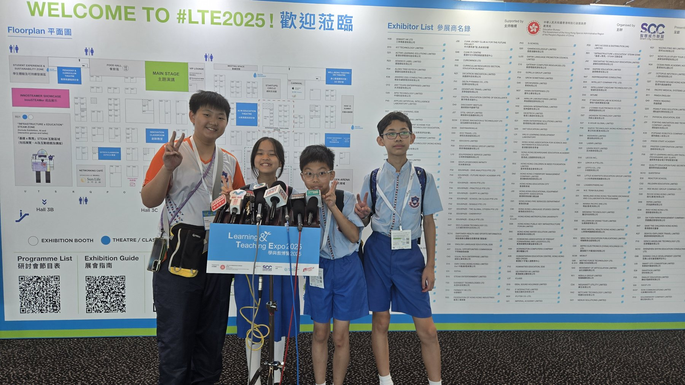
閱讀閱讀打卡、書單推薦、讀後感對話。
運動運動會、體能挑戰、健康任務。
藝術作品展示、才藝匯演、創作歷程。
成長跨科任務、獎勵兌換、學生成長數據分析。
教師專業的重構